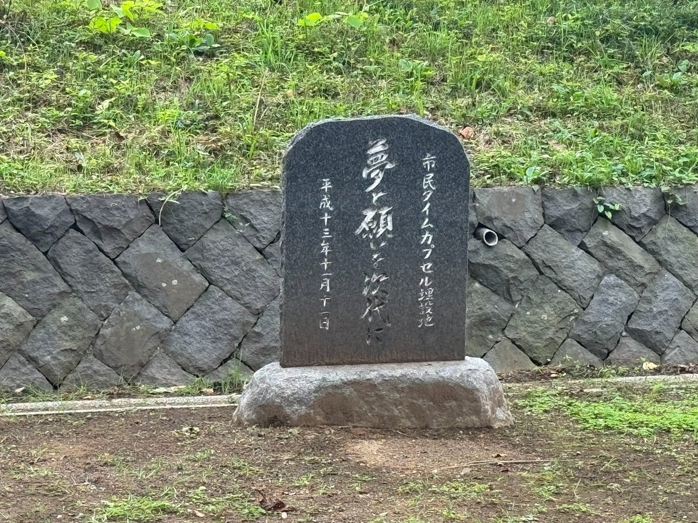
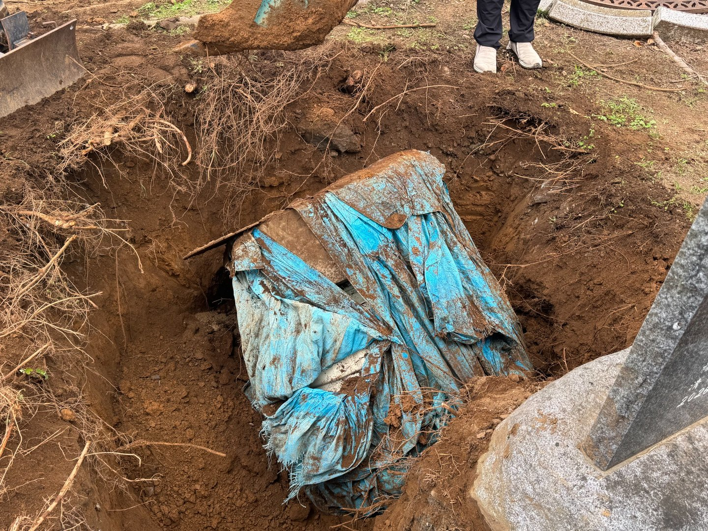
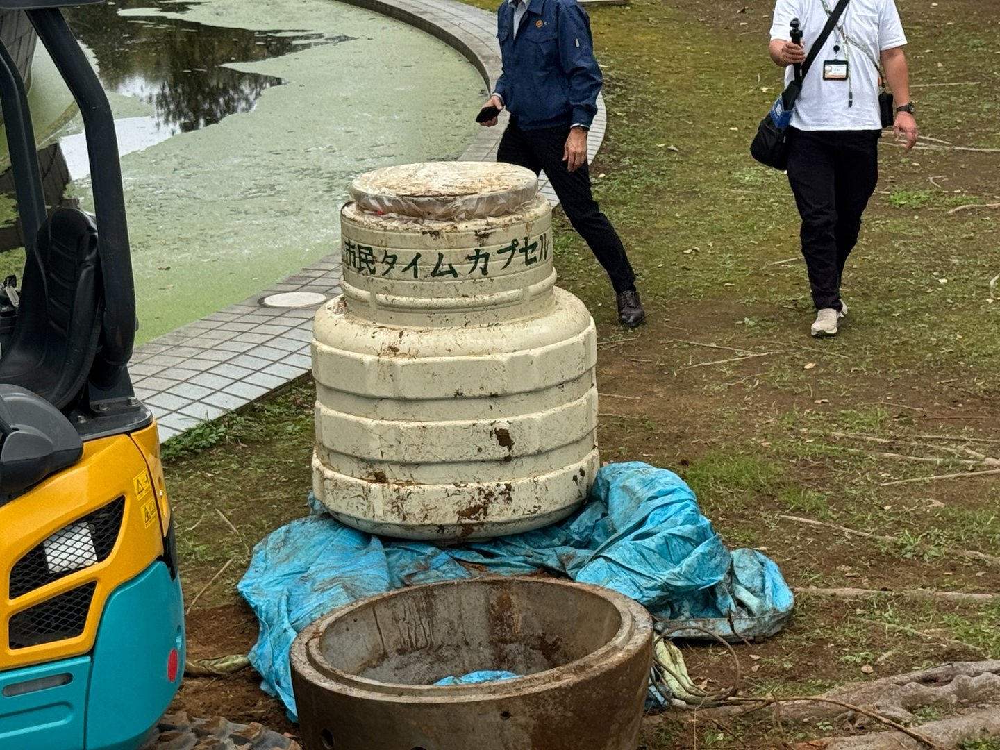

返却日時・場所
日時
2026年11月22日（日）9:00〜17:00
場所
館林市城沼公民館
住所
群馬県館林市松原1−22−22
お持ちいただくもの
お知らせハガキ・申込控、またはご本人を確認できる書類
25年前のタイムカプセルを、ひとり残らず皆さんのもとへ。
転居された方、ご家族・ご友人からの情報もお待ちしています。
ご本人がお亡くなりの場合や代理の方が受け取る場合は、必要書類等について事前に事務局までご相談ください。返却方法に変更がある場合は、このページでお知らせします。
11月22日 当日のスケジュール（予定）
9:30
開封セレモニー
来賓同席のもと、タイムカプセルの開封を予定しています。
当日の進行や返却受付の詳細は、決まり次第こちらでお知らせします。スケジュールは変更となる場合があります。
最新情報・進捗
2026年10月12日
11月22日の開場・開封セレモニー予定を掲載しました予定
9:00開場、9:30から来賓同席の開封セレモニーを予定しています。詳細は「当日のスケジュール」をご覧ください。
2026年10月12日
掘り出し作業の記録写真を公開しましたNEW
10月5日の掘り出し現場の写真を掲載しました。短編動画もInstagram・Xでの公開に向けて準備しています。
2026年10月5日
タイムカプセルの掘り出し作業が無事完了しました完了
たてばやし向井千秋記念子ども科学館にて、25年前に埋設されたタイムカプセルの掘り出し作業を行い、無事に終了しました。
施設の特性や運営上の事情から掘り出し作業を行える日が限られているため、返却日に先立って実施しました。
11月22日の返却に向けて準備を進めています。
2026年10月1日
Instagramで返却のお知らせを開始しました
25年前の記録写真とともに、情報提供と周知へのご協力をお願いしています。
2026年9月10日
案内ページを公開しました
返却日時・場所などの基本情報を掲載しました。
10月5日 掘り出し作業の記録
現場で撮影した実際の写真です。写真は元の記録を生かし、掲載用に容量だけ調整しています。

① 掘り出し前の記念碑

② 地中から姿を現したカプセル

③ 25年ぶりに地上へ
掘り出し記録動画
2026年10月5日の掘り出し作業をまとめた約1分の予告編を、InstagramとXで公開予定です。
短編予告動画：公開準備中
公開後は公式Instagram・Xからご覧いただけます。記録映像の長編版も別途検討しています。